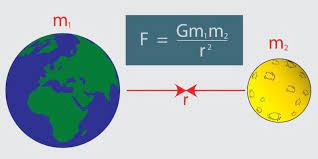
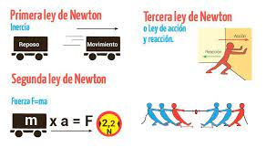
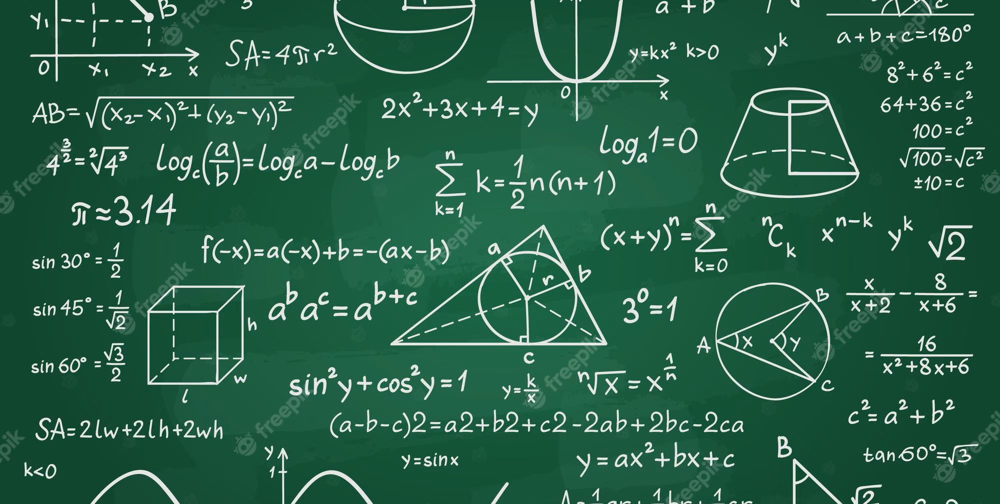
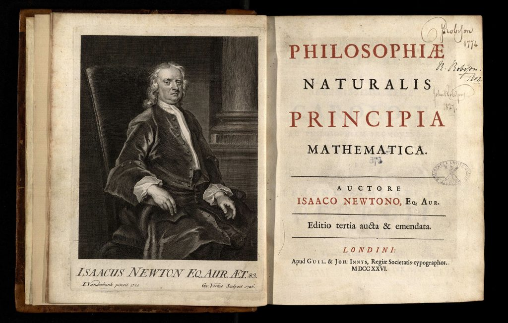

Sir Isaac Newton, nacido el 25 de diciembre de 1642 en Woolsthorpe, Lincolnshire, Inglaterra, fue un físico, matemático, astrónomo y filósofo inglés de gran influencia en la historia de la ciencia y las matemáticas. Sus contribuciones revolucionaron nuestra comprensión del mundo natural.
Newton es reconocido como el descubridor de la ley de gravitación universal, una de las piedras angulares de la ciencia moderna. Esta ley establece que todos los objetos en el universo se atraen entre sí con una fuerza proporcional a sus masas y inversamente proporcional al cuadrado de la distancia que los separa. Su formulación matemática de esta ley revolucionó nuestra comprensión del movimiento planetario y sentó las bases de la física clásica.
Además de sus contribuciones en la física, Newton fue uno de los inventores del cálculo diferencial e integral, herramientas matemáticas fundamentales en el estudio del cambio y la acumulación. Esta invención, desarrollada de manera independiente junto con Gottfried Wilhelm Leibniz, proporcionó un nuevo lenguaje matemático y abrió las puertas a avances significativos en la ciencia y la ingeniería. Newton también realizó importantes avances en el campo de la óptica. Sus experimentos con prismas le llevaron a demostrar que la luz blanca está compuesta por una combinación de diferentes colores. Esta teoría, presentada en su obra "Óptica", sentó las bases para la comprensión moderna de la naturaleza de la luz y allanó el camino para el desarrollo posterior de la teoría de las ondas de la luz.
Algunas Aportaciones
La Ley de Gravitación Universal
En 1687, Newton publicó su obra más famosa, "Philosophiæ Naturalis Principia Mathematica", donde presentó la Ley de Gravitación Universal. Esta ley establece que todos los objetos en el universo se atraen entre sí con una fuerza proporcional a sus masas y inversamente proporcional al cuadrado de la distancia que los separa. Esta teoría revolucionó la forma en que entendemos el movimiento de los cuerpos celestes y sentó las bases de la física clásica.
Las Leyes del Movimiento
Newton formuló las tres leyes del movimiento que son fundamentales en la física clásica. Estas leyes describen cómo los objetos se mueven en respuesta a las fuerzas que actúan sobre ellos. Las leyes del movimiento de Newton proporcionaron una comprensión matemática y cuantitativa del movimiento, sentando las bases de la física moderna.
La Teoría del Cálculo
Newton también es reconocido por su trabajo en el desarrollo del cálculo. Junto con el matemático alemán Gottfried Wilhelm Leibniz, se le atribuye el desarrollo independiente de esta rama fundamental de las matemáticas. El cálculo es una herramienta esencial en la descripción matemática del cambio y se utiliza en una amplia gama de disciplinas científicas.
Legado y Reconocimientos
El legado de Isaac Newton perdura hasta nuestros días y su influencia en la ciencia y las matemáticas es innegable. Sus descubrimientos sentaron las bases de la física clásica y su metodología científica rigurosa ha sido un modelo para generaciones de científicos.
Newton fue presidente de la Royal Society, una de las instituciones científicas más antiguas y prestigiosas del mundo. Su liderazgo en esta organización y sus contribuciones científicas fueron ampliamente reconocidas durante su vida.
Además, Newton recibió numerosos honores y premios por sus logros. Fue nombrado caballero por la reina Ana de Inglaterra en 1705, convirtiéndose en Sir Isaac Newton. También fue elegido miembro del Parlamento por la Universidad de Cambridge en 1689.
Su obra "Philosophiæ Naturalis Principia Mathematica" sigue siendo considerada una de las obras científicas más importantes de todos los tiempos. En ella, Newton estableció las leyes del movimiento y la ley de gravitación universal, sentando las bases de la física clásica y proporcionando una descripción matemática precisa del mundo físico.
El legado de Newton ha inspirado a innumerables científicos, matemáticos y filósofos. Sus contribuciones siguen siendo estudiadas y aplicadas en diversas disciplinas científicas. Su enfoque científico basado en la observación, el razonamiento lógico y la experimentación ha sentado las bases para el método científico moderno.